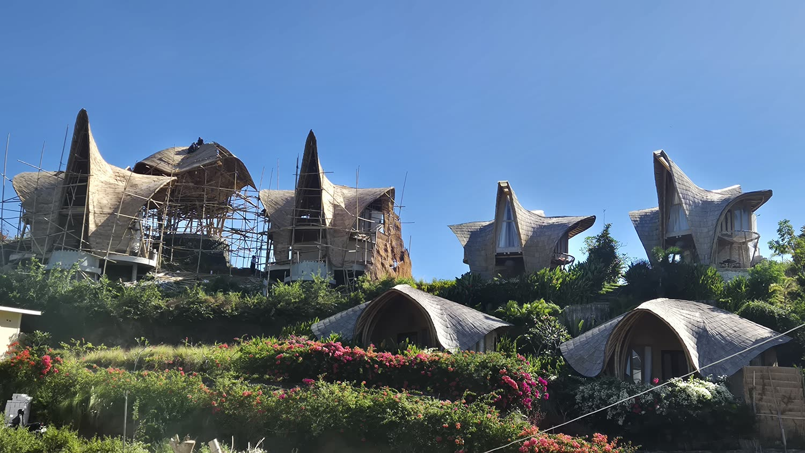
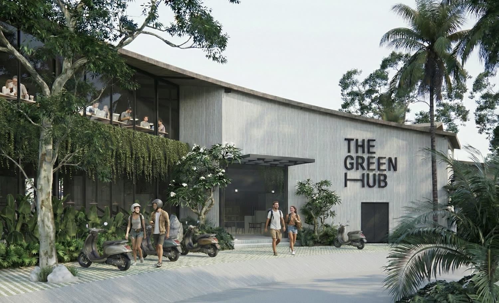
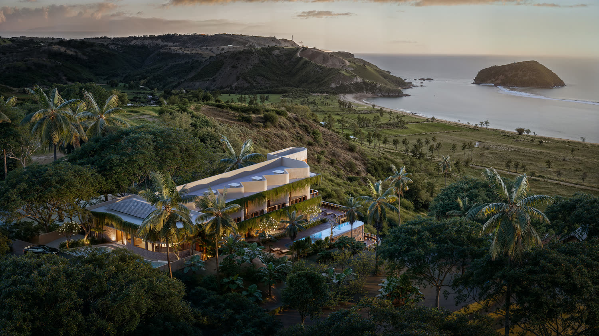
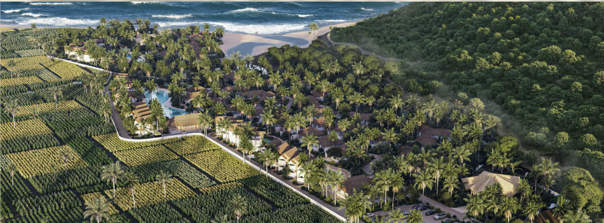

Notas de primera mano de un mes sobre el terreno, no es asesoría de inversión. Los mínimos, estructuras y cifras concretas están en la guía, no en esta página.
Hallazgos

Bueno, aquí estamos. Un mes después de empezar a ver Lombok de verdad con nuestros propios ojos. Mientras Daniella se centraba en sus nuevos proyectos, yo salí a la carretera a explorar. Conocí a desarrolladores, dueños de negocios, padres de amigos de los niños, mientras recorría zonas en desarrollo y obras. Encontré que la gente es muy abierta y no se guarda nada. Encontré obras en un estado terrible, desarrollos donde la vista al mar prometida podría verse pronto comprometida por otros proyectos, casas que se veían geniales a distancia pero donde una botella de agua rodaba por toda la casa porque literalmente nada estaba nivelado, y sitios construyéndose justo junto al río que apenas unos meses antes había causado inundaciones importantes. Además está el hecho de que ahora mismo hay miles del mismo tipo de villa en construcción, lo cual es preocupante.
La isla es increíble y el potencial es real. Comprar a ciegas a alguien haciendo su primer proyecto es ingenuo y arriesgado.
Supongo que como conclusión general puedo decir que la isla es increíble y el potencial es real, pero al mismo tiempo, comprar a ciegas a alguien que hace su primer proyecto es ingenuo y arriesgado. De los cerca de 10 proyectos que he visto y a los que he hecho un nivel básico de diligencia, solo 3 pasaron la primera prueba. Esos 3 proyectos me dieron respuestas claras, transparentes y la documentación de respaldo. La gente al mando de estos proyectos se ha ganado mi confianza, y su concepto es lo bastante único como para no competir con esos miles de villas sino tener su propio concepto y formas distintas de invertir.
Tres proyectos que merecen una mirada más de cerca

The Green Hub
Liderado por los emprendedores en serie Lionel y Javi
A pocos edificios de nuestra casa vimos este restaurante que siempre parecía lleno para desayuno, comida, cena y a todas horas entre medias. Gente con portátiles trabajando en los pufs del jardín, familias comiendo o grupos de amigos jugando a cartas mientras comían en las mesas largas. Lo que más llamaba la atención era el montaje sencillo y minimalista que de algún modo resultaba cálido y acogedor a la vez. Cuando fuimos a comer allí una semana después, más o menos, vimos qué estaba pasando, tanto desde el aspecto de hostelería (mi especialidad) como el arquitectónico (la especialidad de Daniella). El espacio es abierto, acogedor y discreto. La gente deja los zapatos en la entrada y casi se siente como entrar en este gran salón donde probablemente acabas compartiendo mesa con alguien nuevo. Lo mismo pasa con la comida, una gran mezcla de comida internacional reconfortante, muchas sonrisas y todo esto a un precio estupendo. Como siempre hacemos Daniella y yo, observamos el espacio e intentamos entender qué está pasando.
De camino a la salida, Daniella vio un pequeño stand con folletos sobre The Green Hub. Resulta que The Green Hub es el próximo proyecto de Lionel y Javi: un espacio de coworking dedicado, combinado con co-living (básicamente un "hostal" con habitaciones privadas para gente que usa el espacio de coworking como su oficina). He visto este concepto aparecer mucho y acierta, de varias formas, con la dirección hacia la que va el mundo. Mucha gente trabaja en remoto y busca sitios con un precio bajo y una calidad de vida alta para pasar varias semanas o meses, de modo que entre trabajo y trabajo puedan surfear, hacer senderismo y disfrutar de las playas de Lombok. En nuestra última parada en Corea del Sur, alquilé un sitio en un espacio de coworking que también tenía co-living. El concepto funcionaba de maravilla y las oficinas estaban muy bien pensadas. Había sofás y hamacas para los trabajos de ritmo lento, monitores extra donde conectarte, cabinas telefónicas para hacer llamadas y salas de reuniones para charlar. Mi tiempo allí probablemente ha sido el más productivo de mi vida, porque el espacio está hecho para la productividad. Al llegar a Lombok busqué algo parecido pero nada destacaba. La mayoría de sitios que mencionaban coworking eran restaurantes donde, a cambio de consumir, podías usar una mesa por tiempo limitado. Otros tenían una mesa larga con instalaciones muy básicas, y solo uno tenía cabinas telefónicas, pero las reseñas revelaban que no estaban insonorizadas. Decidimos invertir más en una casa que tuviera un escritorio y habitaciones separadas en su lugar.
The Green Hub es el primer espacio de coworking dedicado en Kuta con instalaciones de primer nivel y alojamiento in situ. Tienen un café para ingresos de hostelería, un auditorio para alquilar para eventos, y una distribución flexible que permite cambiar a más o menos oficinas privadas según la demanda. El techo se está poniendo ahora mismo y esperan tenerlo operativo dentro de 6 meses.
Cómo funciona este proyecto, y las cifras detrás de él, están en la guía. Recibir la guía →

Canvas
Shaun y Brandon
Dos amigos que se aliaron para este concepto increíble. Empecé a seguir a Shaun en Instagram bastante antes de llegar aquí de verdad. Era real, ahí donde distinguía la buena construcción de la mala en Lombok. Shaun ha trabajado en construcción en California (EE. UU.) y es inversor inmobiliario. Cuando hace unos años vendió su casa en California y vino a Lombok a surfear, vio la falta de buenas constructoras y empezó a involucrarse. Con los pies en el terreno, poco después compró una parcela e invirtió su dinero en construir 4 villas él mismo mientras lo documentaba todo. Lo que realmente aprecio de Shaun es su transparencia, y también su conocimiento y la forma en que comparte información valiosa en vez de guardársela. Fue él quien me hizo darme cuenta de lo importantísimo que es investigar bien en Lombok (y en cualquier otro sitio). Cuando finalmente conocí a mi "héroe de Instagram" en persona para comer, básicamente confirmó mis expectativas. Shaun es honesto, directo y no trabaja con cualquiera, pero es más como yo, investiga primero. Se ha rodeado de los socios adecuados para Canvas. Entonces, ¿de qué va Canvas?
Canvas es, de nuevo, un espacio con múltiples facetas, construido en lo alto de una colina con vistas a la playa de Areguling. En su base es un hotel boutique con acabados y vistas preciosas, pero el concepto es mucho más singular. El lugar está pensado para retiros de empresa y pequeños congresos, lo cual encaja muy bien con los contactos de Shaun en el mundo corporativo y la demanda cada vez mayor de sitios donde llevar a equipos para eventos de team-building, lanzamientos de producto o congresos de clientes, todo combinado con un programa atractivo para explorar Lombok, surfear y respirar aire fresco. Revisé su documentación y su concepto muestra de verdad lo bien pensado que está todo.
Cómo funciona este proyecto, y las cifras detrás de él, están en la guía. Recibir la guía →

Tampah Beach Villas
Baraca Development
Aunque tomamos caminos separados hace unos meses, cuando el mercado inmobiliario de los EAU se resintió, mantuve el contacto con mis excompañeros y con el fundador de Baraca. Diana, una de las amigas de la época de Baraca, es actualmente quien supervisa este proyecto como parte de su cartera, y es uno de esos proyectos que simplemente sé que va a salir bien. Pasé tiempo suficiente en la empresa como para ver cómo se hacen las cosas allí, pero también tuve la oportunidad de comparar esto con otros desarrolladores. En cuanto a ubicación, acabados y concepto, es difícil de superar. Justo en la playa de Tampah, probablemente la zona más exclusiva del sur de Lombok, este desarrollo consiste en villas, la mayoría con piscina privada o directamente sobre una laguna compartida. Sé que a la gente implicada le importan los detalles y se asegurarán de usar solo los mejores materiales, y el hecho de que hayan contratado a un conocido contratista holandés para supervisar el proyecto me da confianza en que este destacará de varias formas.
Diana tiene muchos años de experiencia en el sector inmobiliario y ha ayudado a muchos inversores y particulares a construir una cartera inmobiliaria en los Países Bajos, los EAU y ahora en Lombok. También es mi persona de confianza, porque siempre puedo esperar una respuesta honesta de ella.
Cómo funciona este proyecto, y las cifras detrás de él, están en la guía. Recibir la guía →
Bueno, esta fue mi primera vez compartiendo mis hallazgos. No he entrado en detalle sobre los impuestos, etc., de cada uno de estos tratos aquí para mantenerlo claro, pero el desglose completo, incluidas las cifras y cómo funciona cada uno, está en la guía.
Ahora mismo estoy en la última fase de validar un cuarto proyecto. Este proyecto tiene una de las mejores vistas que he visto. Siempre podemos comparar este también en una charla personal.
Recibe la guía de Lombok
La parte que dejé fuera de esta página: para cada proyecto, el mínimo para entrar, cómo está estructurado, y cómo funciona realmente. Te la envío por correo, o la repasamos en una charla personal.
Recibirás la guía además del informe mensual cuando suba uno nuevo. Primero te enviamos un enlace de confirmación (doble opt-in); cancela cuando quieras.
O pídela por WhatsApp →